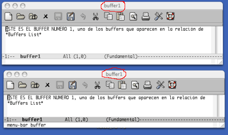
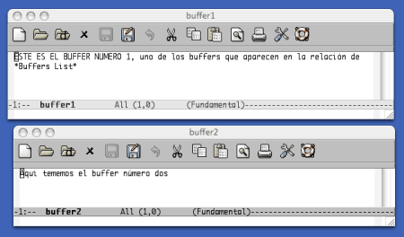

10. Marcos
Pág.Anterior | Índice | Pág.Siguente
Como se dijo en el anterior capítulo, cuando trabajamos con ventanas, múltiples buffers se visualizan en múltiples porciones diferentes de una misma GUI.
En cambio, trabajando con marcos, múltiples buffers se visualizarán en múltiples GUI,s independientes.
10.1 Creación de un nuevo marco.
Pág.Anterior | Índice | Inicio Página | Pág.Siguente
El comando para la creación de un nuevo marco es:
- Comando : C-x 5 2
- Opción de menú : File--> New Frame
- Comando "largo" : M-x make-frame <Enter>
- Abre un nuevo marco, conteniendo el buffer activo.
El siguiente gráfico es el resultado de aplicar el anterior comando sobre un buffer abierto, buffer1 :
|  |
Podemos observar como el título del marco, señalado en rojo, coincide con el título del buffer.
Si deseamos abrir un nuevo buffer en un nuevo marco, el comando a considerar será:
- Comando : C-x 5 f
- Comando "largo" : M-x find-file-other-frame <Enter>
- Abre un nuevo buffer, en un nuevo marco.
Veamos el funcionamiento de este comando:
Tras teclear el comando, en el mini-buffer aparece el mensaje Find file in other frame:, solicitándonos la introducción del nombre del nuevo archivo.
Tras introducir el nombre del nuevo archivo, buffer2, éste es abierto y mostrado en un segundo marco independiente.
|  |
Si el buffer que desemos abrir en un nuevo marco queremos que sea de solo-lectura, el comando a usar sería :
- Comando : C-x 5 r
- Comando "largo" : M-x find-file-read-only-other-frame <Enter>
Como se vió en 8.Buffers Múltiples [8.2], mediante el comando C-x b cambiábamos de buffer activo.
Pués bién, Emacs nos ofrece la posibilidad de realizar el anterior cambio, pero visualizando el nuevo buffer activo en un nuevo marco. En comando para realizar esta operación es:
- Comando : C-x 5 b
- Comando "largo" : M-x switch-to-buffer-other-frame <Enter>
10.2 Moverse entre marcos.
Pág.Anterior | Índice | Inicio Página | Pág.Siguente
El medio más cómodo para movernos entre marcos es, en interfaces gráficas, mediante el ratón.
Sin embargo, Emacs nos ofrece un comando para esta función, útil en versiones no gráficas o , incluso en versiones gráficas, cuando tenemos muchos marcos abiertos.
- Comando : C-x 5 o
- Opción de menú : Buffers-->Frames
- Comando "largo" : M-x other-frame <Enter>
Tanto el comando como el comando "largo" provocan el desplazamiento del cursor al marco anterior
En cambio, mediante la opción de menú tenemos acceso a una Lista de marcos, lo que nos permite desplazarnos directamente al marco deseado.
10.3 Cerrar marcos.
Pág.Anterior | Índice | Inicio Página | Pág.Siguente
Como en el caso de las ventanas, tenemos dos comandos para cerrar marcos:
Con este comando cerramos el marco activo:
- Comando : C-x 5 0
- Opción de menú : File-->Delete Frame
- Comando "largo" : M-x delete-frame <Enter>
Con este comando cerramos todos los marcos excepto el marco activo.
- Comando : C-x 5 1
Cabe recordar que con el comando C-z se minimiza ( iconifica) el marco activo.